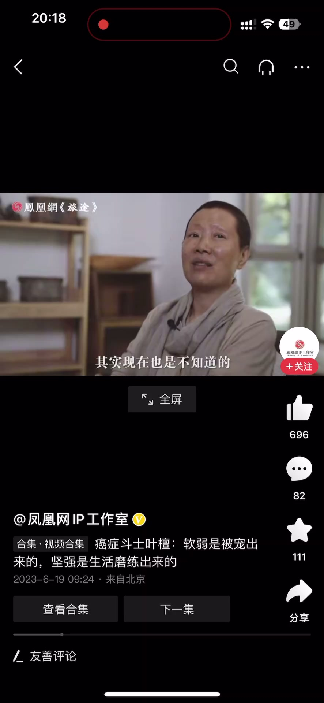
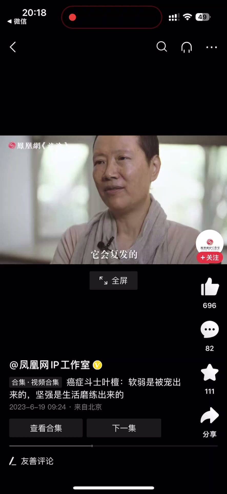
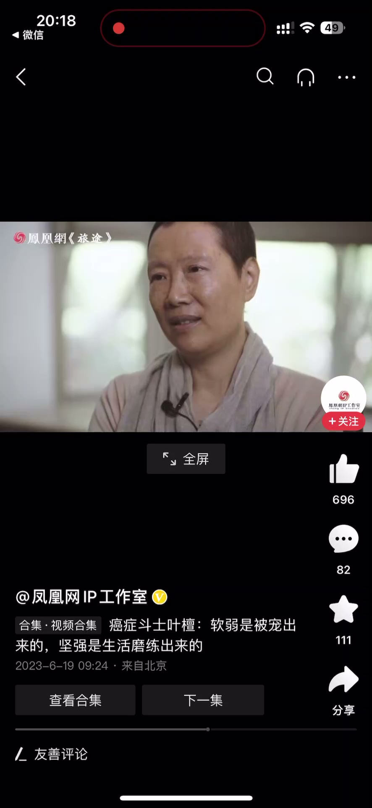
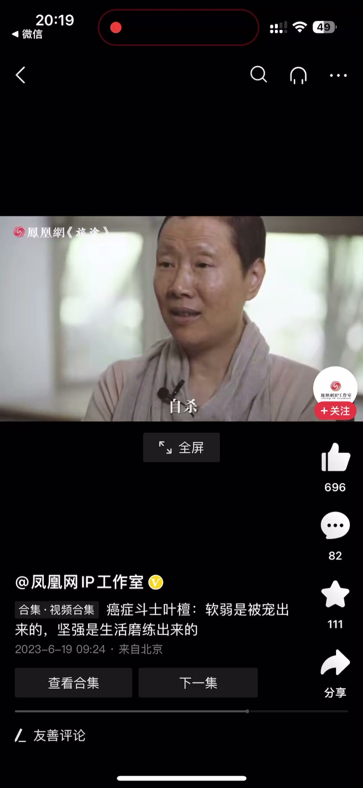
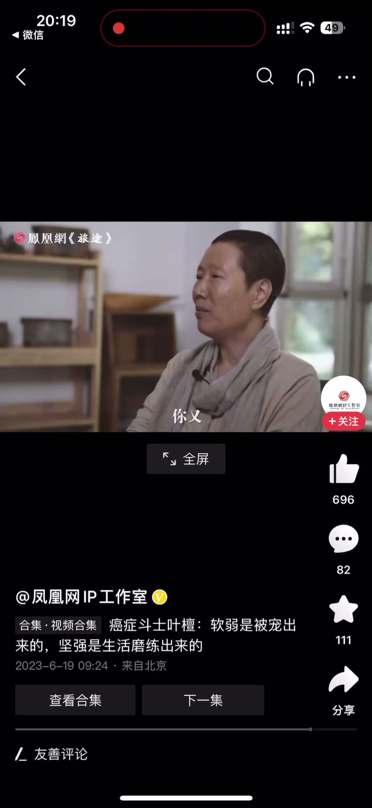

内容要点
一段不到 1 分钟的生命实话：检查结果还没完全确定——硬块还残留一点，钙化点里有没有癌细胞残留要等整个检查结束、确认它在缩小没有复发，才能说「没有」。面对「你很坚强」的评价，讲者说自己只是「强迫的」：软弱是被宠出来的，坚强是生活磨练出来的，不坚强你能怎么办。她也提到看到年轻人相约自杀非常难受，能体会到那种绝望——没有希望、没有未来、没有钱，心里又无法抵抗，剩下的路就是抑郁或者自杀。
知识结构
硬块还残留一点，钙化点里有没有癌细胞残留要等整个检查结束、确认缩小且没有复发才能安心。现在心态已经平衡，不平衡也没办法。
有人说你很坚强，讲者说自己只是强迫的：软弱是被宠出来的，坚强是生活磨练出来的，你不坚强能怎么办。看到年轻人相约自杀很难受，能体会那种绝望——没有希望、没有未来、没有钱，心里无法抵抗，剩下的路就是抑郁或自杀。
坚强不是天生品质，而是生活逼出来的选择：软弱是被宠出来的，坚强是磨出来的——这句话既是对自己的解释，也是对还在挣扎的人的提醒。
00:00-00:30检查没结束，心态只能平衡
讲者说还要去检查一次、再看一看这个到底是什么性质：因为硬块还是残留了一点，那个钙化点里面到底还有没有癌细胞残留，现在其实是不知道的。
要等到整个检查结束，确定它在缩小、没有复发、而且越缩越小，那么我们才能说它是没有了；还是它会复发，那没关系，就应对。
你现在心态已经很平衡，你不平衡也没办法——接受现实是唯一的选择。


00:31-00:57坚强是被逼的：软弱被宠出来
有人说你很坚强，讲者只想说：是强迫的。因为软弱是被宠出来的，坚强是生活磨练出来的，你不坚强，能怎么办？
像现在那些年轻人自杀，而且是相约自杀，讲者看了非常非常难受，她能够体会到他们这种绝望的心情。
如果是像他们这样，觉得自己没有希望、没有未来、没有钱，心里又不能足够地抵抗的话，那剩下的路就是抑郁或者自杀了。



完整转录（26段）
以下文本由 Whisper medium 模型自动转录，可能存在少量识别误差，已尽可能修正。
我要去检查一次
再去看一看这个到底是什么性质
因为它硬块还是残留了一点
那个概化点到底里边还有没有癌细胞残留
其实现在也是不知道的
要等到我整个的检查结束
它确定它在缩小没有复发
而且越缩越小
那么我们才能说那个是没有
有的还是它会复发的
那没关系 就应对
你现在心态已经很平衡
你不平衡也没办法
所以有人说你很坚强
我只想跟大家说强迫的
因为软弱是被宠出来的
坚强是生活磨练出来的
你如果不坚强你能怎么办
像现在那些年轻人自杀
而且是相约自杀
我看了就非常非常的难受
我能够体会到他们这种绝望的心情
如果是像他们这样觉得自己没有希望
没有未来 没有钱
你又心里不能足够地去抵抗的话
那剩下的路就是抑郁或者自杀了